Álbumes de José José
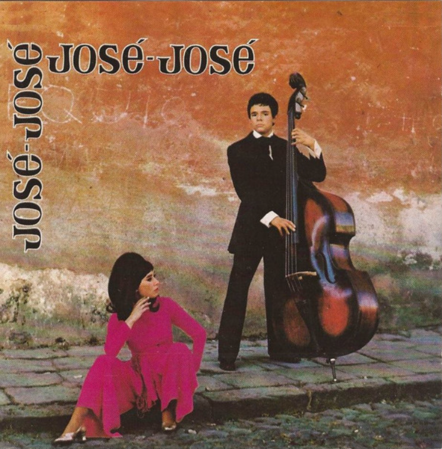
Cuidado
-1969-
Album debut de José José con una duración de 33 minutos. Los inicios del príncipe, con pequeños destellos de su grandeza.
12 canciones
- Sólo una mujer
- Una mañana
- Se agradecerá
- Pero te extraño
- Monólogo
- La amante perfecta
- Sin ella
- Agua con sal
- Lluvia en la tarde
- Presiento
- Cuidado
- Antes
33 minutos
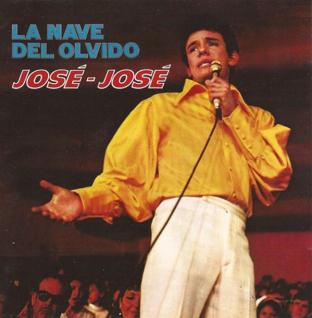
La Nave Del Olvido
-1970-
Hitazo que impuso la gran melodia de José José en los corazones de las personas, dándolo a conocer por la radio.
12 canciones
- La Nave Del Olvido
- El Día Más Triste Del Mundo
- Si Alguien me Dijera
- Ven y Verás
- Alguien
- Ella es Asi
- Del Altar a la Tumba
- Y El Mundo Sigue Girando
- Nadie, Simplemente Nadie
- Mirar El Amor
- Avalancha
- Un Mundo Para Ti
32 minutos
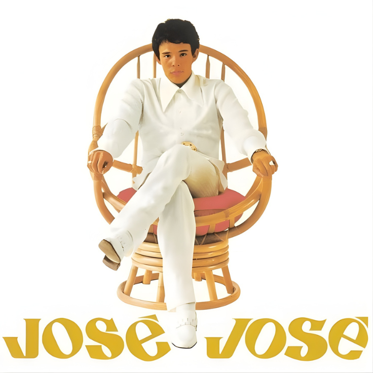
El Triste
-1970-
Éxito internacional con el que lo catapultó. Con una duración de 37 minutos y la interpretación de El triste demuestra su gran talento y su estilo tan icónico.
12 canciones
- Alguien Vendrá
- Mi Niña
- La Noche de Los Dos
- Llegará
- Dios Es Amor
- El Triste
- Esa Canción de Ayer
- Nunca me Dejes
- ¡Oh Gente!
- Amoras
- A partir de hoy
- Dos
37 minutos
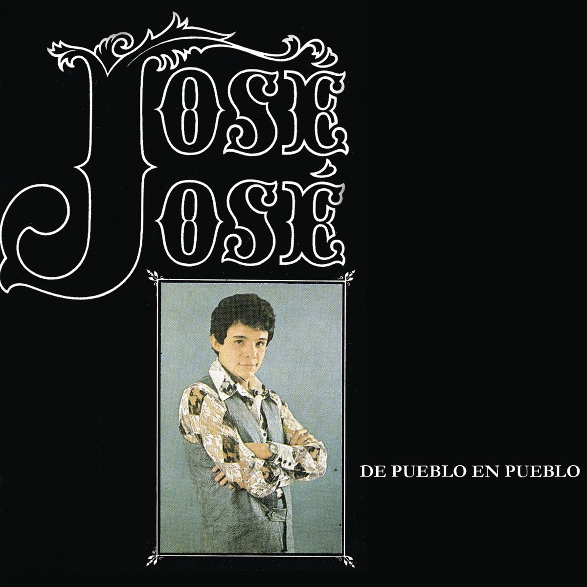
De Pueblo En Pueblo
-1972-
Álbum que siguió dándolo a conocer ante el mundo, definiendo un estilo tan notorio en sus canciones, José José nos relata varias obras extrospectivas.
11 canciones
- De Pueblo En Pueblo
- Te Beso y Me Voy
- Este Viejo Corazón
- Camino Verde
- Soy Como Quieres Tú
- Camina Caminador
- El Solitario
- Como Extraño Mi Pueblo
- Me Llaman Tonto
- Quemame Los Ojos
- Solo Yo Seguiré Siendo Tuyo
33 minutos
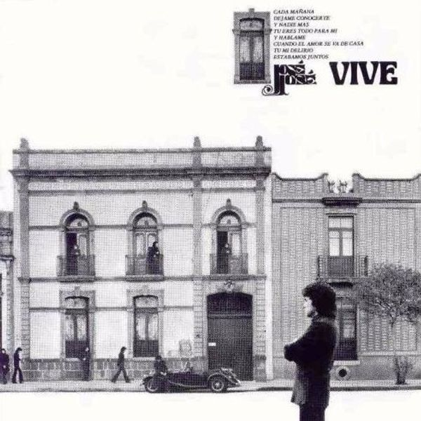
Vive
-1974-
Buena interpretación de José José donde experimenta con nuevo sonidos y con un ritmo con tanto vigor, al igual que el titulo.
11 canciones
- Cada Mañana
- Y Nadie Más
- Es Que Te Quiero
- Tú Eres Todo Para Mí
- Alguien Que Te Extraña
- Estábamos Juntos
- Vive
- Déjame Conocerte
- Tú Mi Delirio
- Y Háblame
- Cuando El Amor Se Va de Casa
35 minutos
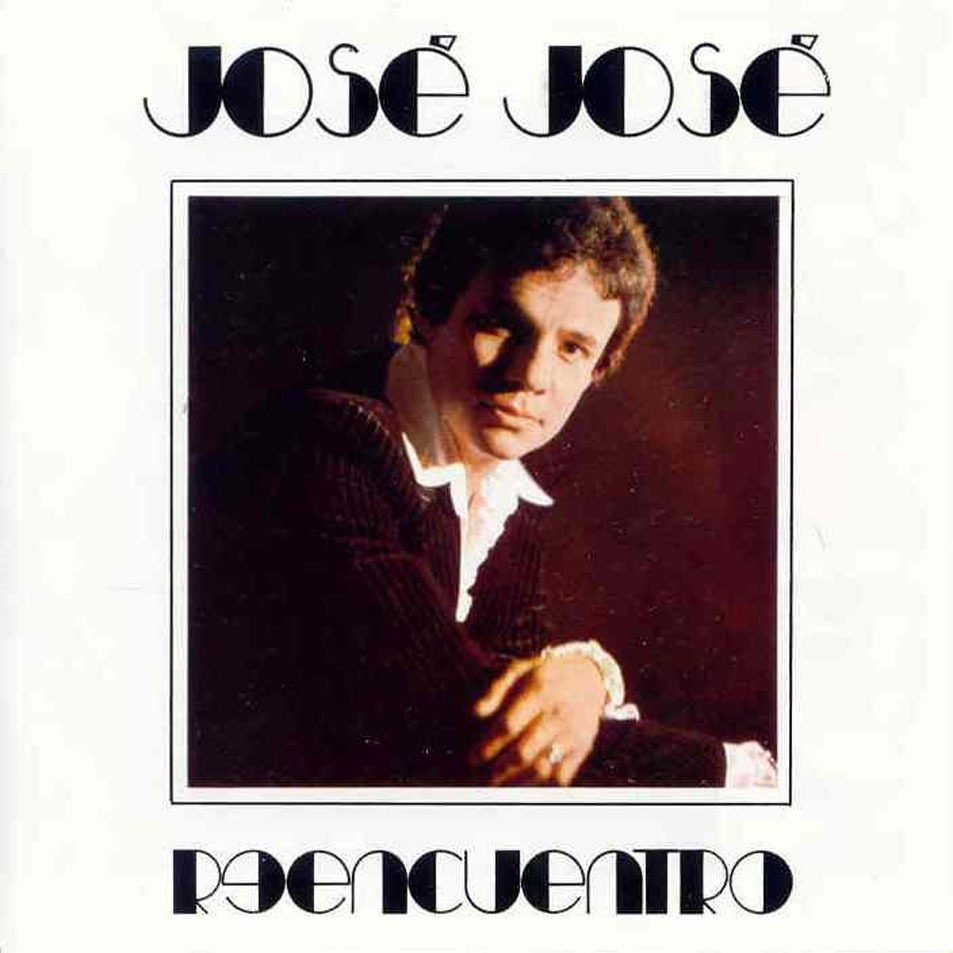
Reencuentro
-1977-
Un clásico del príncipe, explora la profundidad del amor y lo complejo que este llega a ser, con su tan carecteristico estilo interpreta algunas de sus mejores canciones.
10 canciones
- Recuerdos
- Buenos Días, Amor
- Solo Tú
- Te Canto Solo a Ti
- ¿Cómo Ser Diferente?
- Gavilán o Paloma
- Si Alguna Vez
- Si No Eres Tú
- Amar y Querer
- Gotas de Fuego
38 minutos
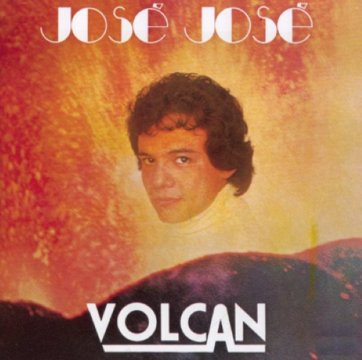
Volcán
-1978-
Obra que relata tan harta pasión y fuerza del príncipe, un gran exitazo además de que se convirtió en icono suyo las baladas románticas y su intensidad.
12 canciones
- Volcán
- O Tú o Yo
- Amor Lo Que Se Dice
- Amándote
- Pregúntaselo a Ella
- Solo Los Pájaros
- Jaque Mate
- Por Una Sonrisa
- Libérame
- Farolero
39 minutos
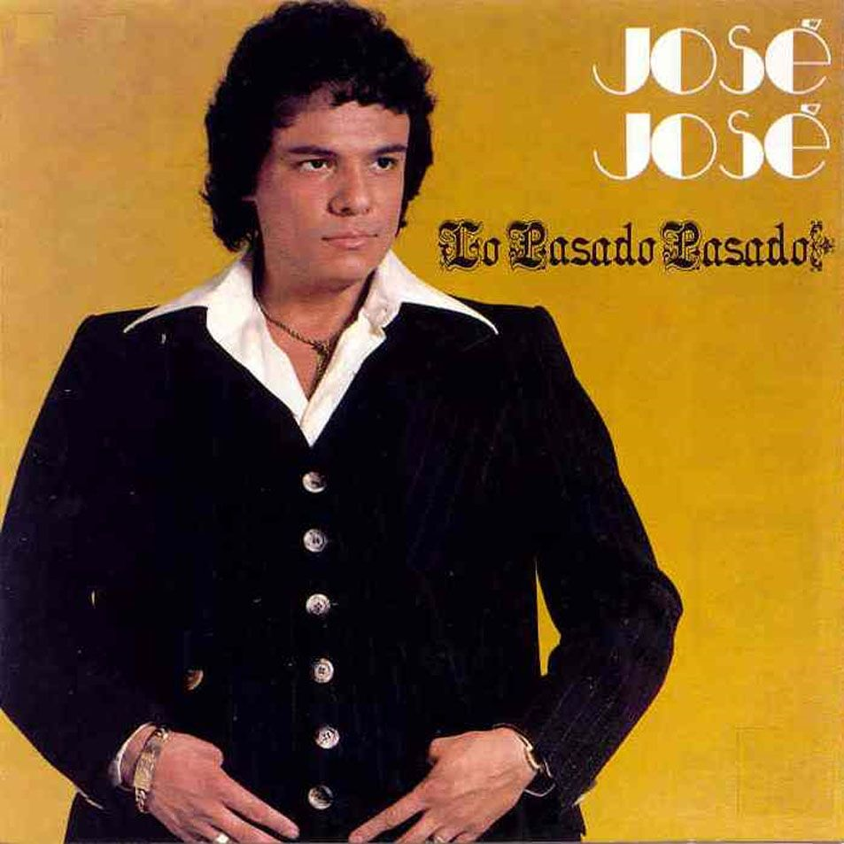
Lo Pasado Pasado
-1978-
Un trabajazo interpretado por el mismísimo José José, en este álbum expresa sentimientos profundos del amor, tanto de recordar los tiempos que no volverán.
10 canciones
- Lo Que No Fue No Será
- Amor de Discoteque
- Cómo Deseo Hoy Que Sea Mañana
- Hoy Que Faltas Tú
- Ahora No
- Lo Pasado, Pasado
- Ahora o Nunca
- El Último Beso
- Almohada
- Te Quiero Tal Como Eres
37 minutos
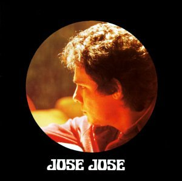
Tan Cerca... Tan Lejos
-1975-
Aquí José José recurre a las baladas románticas de manera introspectiva y melancólica, distante y sentimental la manera de expresarse.
10 canciones
- Divina Ilusión
- Sentimientos
- Nuestros Recuerdos
- Tan Cerca... Tan Lejos
- Hoy Vuelvo a Ser... El Triste
- Paloma
- Candilejas
- Poruqe Yo No Soy Poeta
- Tú y Yo
- Alas
35 minutos
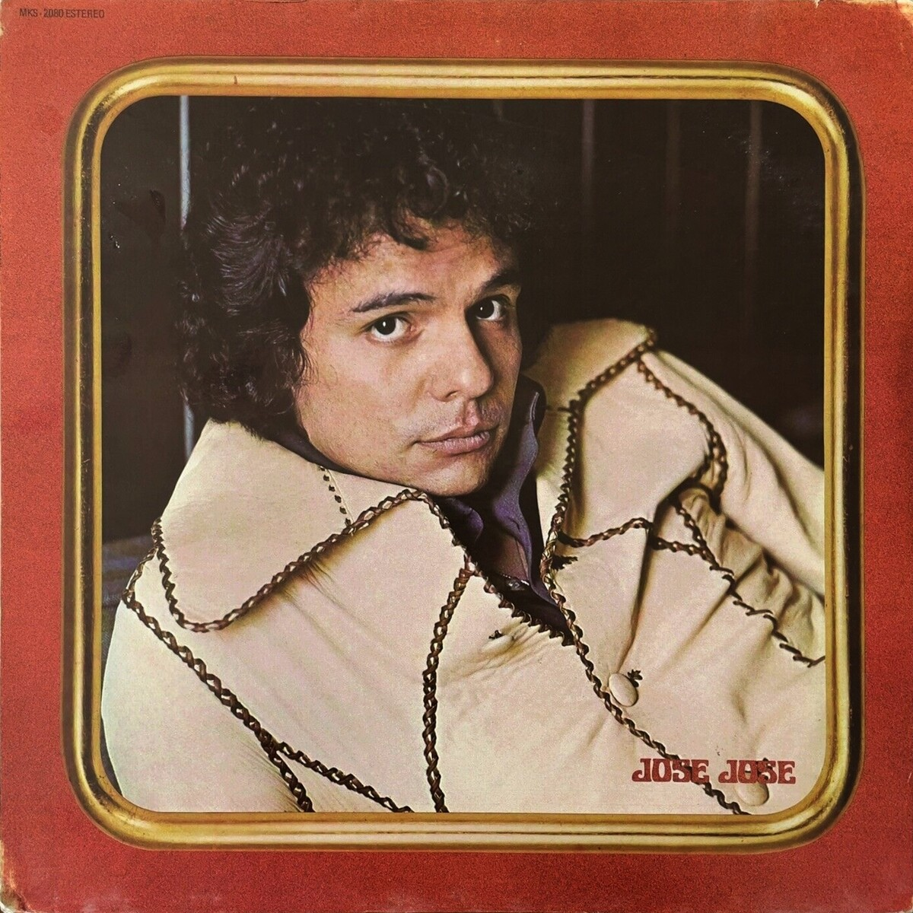
El Príncipe
-1976-
Obra que le otorgó el legendario titulo de El Príncipe a José José, y donde además da cátedra del talento de sí mismo con este álbum, ambientado en un reinado.
10 canciones
- En Las Puertas Del Colegio
- Remate
- Mil Gracias Por Tu Amor
- Otro Día Sin Ti
- Verte a Ti
- Nuestro Amor Es El Más Bello
- Tu Melodía
- El Príncipe
- San Blas
- Mírame
31 minutos
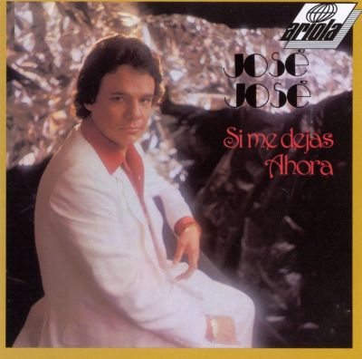
Si Me Dejas Ahora
-1979-
Álbum que relata el dramatismo del amor, y explora la profunda necesidad del deseo en una relación. una excepcional interpretación del príncipe.
10 canciones
- Mientras Llueve
- Será
- Candy
- Franqueza
- Rosa de Fuego
- Si Me Dejas Ahora
- He Sido
- Donde Vas
- Tu Primera Vez
- Linda Disco
36 minutos
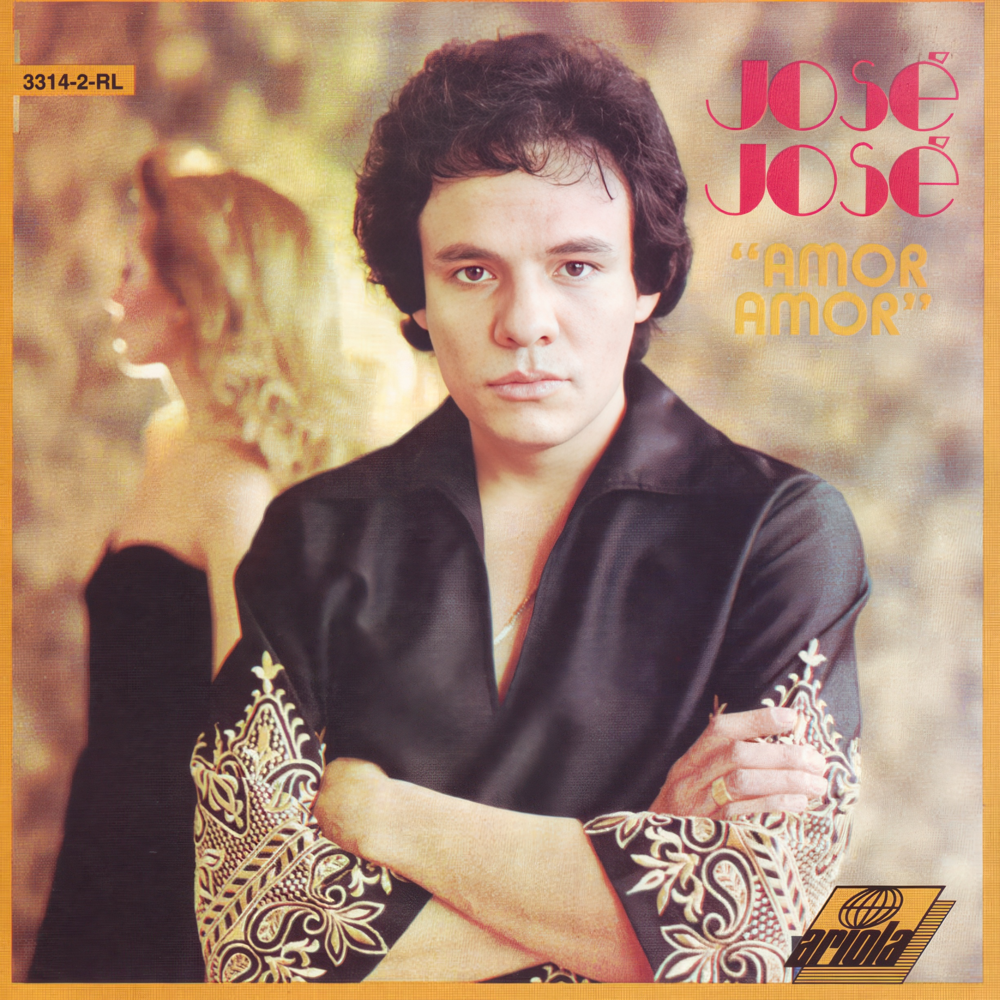
Amor Amor
-1980-
Iniciando la decada de los 80s y lanza esta majestuosa obra, relatan situaciones y momentos intensos de una relación, con su pulcra instrumental y la gran voz del príncipe, este álbum es una joya del mismo, demostrando calidad y grandeza.
9 canciones
- Insaciable Amante
- No Me Digas Que Te Vas
- No Me Platiques Más
- Aléjate
- Amor Amor
- A Ratos
- Él (Him)
- Perdido En La Oscuridad
- Cosa de Dos
39 minutos
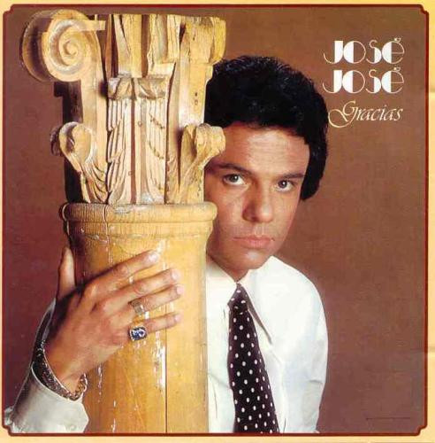
Gracias
-1981-
Álbum impregnado de celebración y agradecimiento para los fans del príncipe, dando a notar la humildad y el reconocimiento que el público le ha dado, sin olvidar su estilo de balada romántica.
10 canciones
- Gracias
- Uno Noche de Amor
- No Puedes Mentirme
- Pero Me Hiciste Tuyo
- Solo Tú y Yo
- Preso
- Vamos a Darnos Tiempo
- Ámame
- Me Basta
- Tranquilo
40 minutos
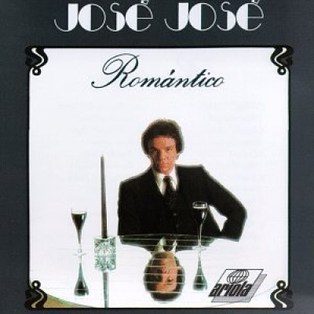
Romántico
-1981-
No solo un álbum exitoso, un homenaje al amor al arte sobre los boleros, entregando su estilo propio a este género, revitalizandolo y dándolo a conocer en los jovenes.
12 canciones
- El Reloj
- Como Fue
- Cancionero
- Reina Mía
- Regálame Esta Noche
- Polvo Enamorado
- La Gloria Eres Tú
- Te Me Olvidas
- Novia Mía
- Un Poco Más
- Muchachita
- Tu Ausencia
41 minutos

Mi Vida
-1982-
Álbum más introspectivo y biográfico de José José, relfexiona sobre lo que ha sido su vida y conmueve con su gran resiliencia para seguir adelante.
12 canciones
- Mi Vida
- Aqui Estoy Yo
- Contigo No
- Soy Tan Infiel
- Y Para Qué
- Nunca Sabrán
- Desesperado
- Vale La Pena Intentarlo
- Yo No Soy Dingo de Ti
- Siempre Te Vas
- Regresar El Ayer
- No Es a Mí
45 minutos
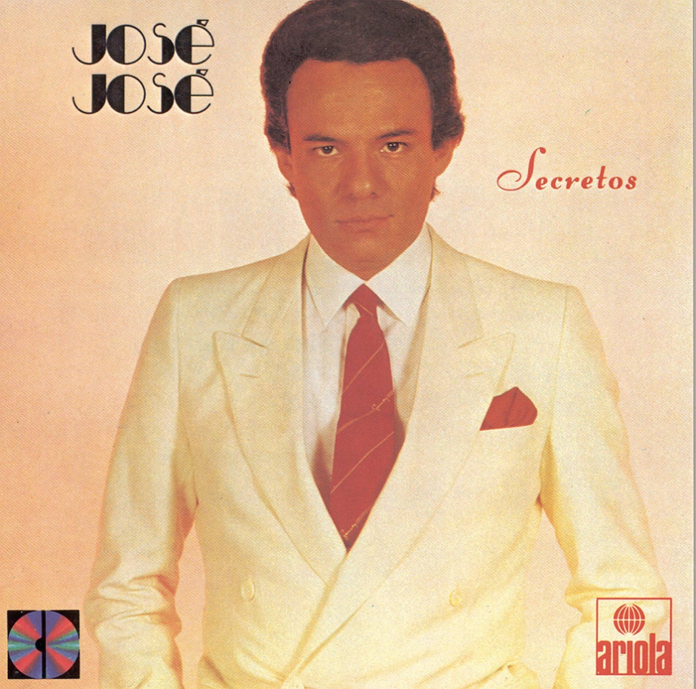
Secretos
-1983-
Una de las obras maestras no solo del príncipe, sino de la historia de la música romántica, con una perfecta composición e interpretación, este álbum es la cima del príncipe y uno de los más exitosos, siendo el más vendido.
10 canciones
- Lo Dudo
- El Amor Acaba
- Voy a Llenarte Toda
- Cuando Vayas Conmigo
- Entre Ella y Tú
- Lágrimas
- He Renunciado a Ti
- Quiero Perderme Contigo
- Esta Noche Te Voy a Estrenar
- A Esa
43 minutos
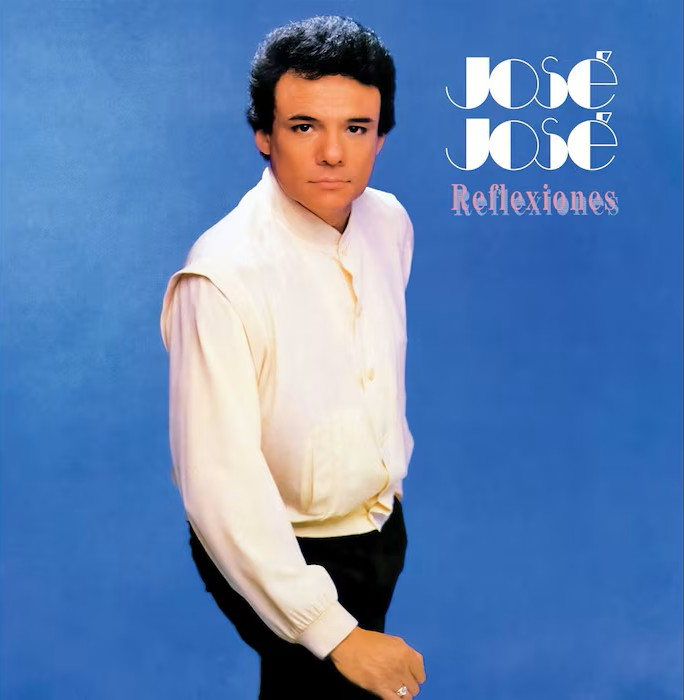
Reflexiones
-1984-
Una sofisticada y pulcra obra, un éxito rotundo debido a su bella composición y su gran calidad. José José sigue demostrando estar en la cima de la música latina y un gran baladista romántico.
10 canciones
- Payaso
- Seré
- Adiós, Princesa
- Tú Ganas
- Toda Mía
- De Hombre a Hombre
- Disimula
- ¿Y Qué?
- ¿Estás Segura?
- ¿Qué Hay de Malo En Ser Extraños?
32 minutos

Promesas
-1985-
Un disco increíble que consigue venderse como un éxito, con una tonalidad sofisticada y una interpretación que recuerda la gran habilidad de José José y su estilo tan icónico que siguió ganándose el corazón de las personas.
10 canciones
- Amantes
- Me Vas a Echar de Menos
- Mas
- Pruébame
- Muchacho
- Solo Tú
- Tú Me Estás Volviendo Loco
- Promesas
- Lástima
- Yo
30 minutos
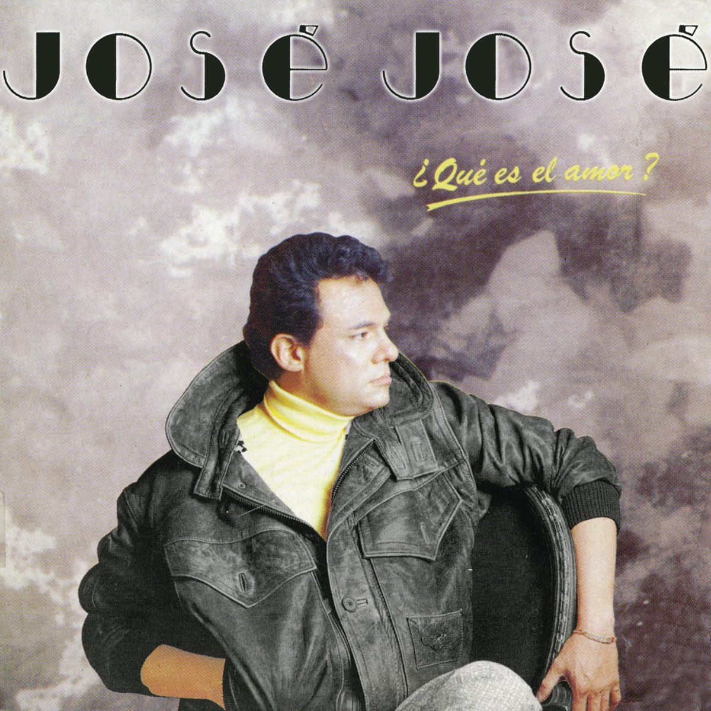
¿Qué Es El Amor?
-1989-
Un álbum que gira en un entorno más moderno, empleando sonidos más prominentes de la época y actualizados. Habla como su titulo índica, del tema amplio que es el amor.
11 canciones
- Condenado
- Como Tú
- Él
- Piel de Azúcar
- Me Voy
- Punto Final
- Tal Vez Por Nada
- Los Amantes
- ¿Qué Es El Amor?
- Una Amable Aventura
- Qué No Daría Yo
45 minutos

En Las Buenas... Y En Las Malas
-1990-
Obra que se propone a exponer las dos caras del amor, equilibrando las experiencias tan diversas que existen alrededor de las relaciones.
11 canciones
- Amnesia
- Unos Quitan y Otros Dan
- Pequeñas Grandes Cosas
- Un Hotel En Vez dde Corazón
- Atrapado
- Hay Un Mañana
- Ni Me Lo Digas
- Escuchando Ofertas
- Esa Mujer
- Caso Común y Corriente
- Uno Mismo
43 minutos
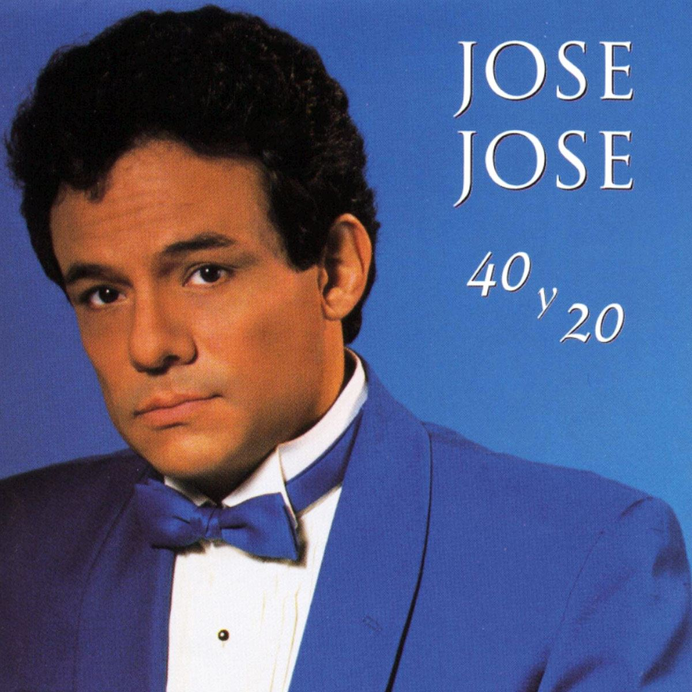
40 y 20
-1992-
Una obra maestra del príncipe, excelencia retratada a base de gran valentía y madurez, intepretarlo fue todo un reto porque habla tan emotivamente de las situaciones de la vida del príncipe y de temas considerados tabú.
10 canciones
- 40 y 20
- Así de Fácil
- Eso Nomás
- Ando Volando Bajo
- Esta Noche
- Cirano
- Como Le Haces
- Egoísta
- Porque No
- Lo Que Quedó de Mí
41 minutos
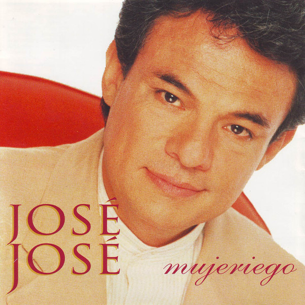
Mujeriego
-1995-
A pesar de las dificultades que enfrenta el príncipe, consigue interpretar este gran disco, dónde explora numerosos temas del amor, como la de ser mujeriego, con su estilo tan caracteristico y un tono melancólico.
10 canciones
- Mañana Sí
- Olvídame
- No Valió La Pena
- Llora Corazón
- Mujeriego
- Bohemio
- Dónde Andarás
- La Vida Pasa
- Vas a Ver
- Dale Gracias a La Vida
38 minutos
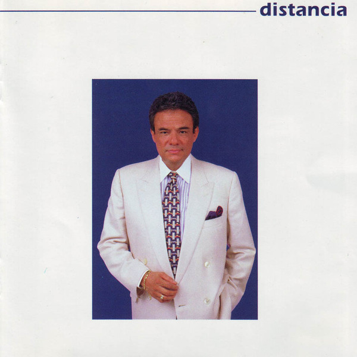
Distancia
-1998-
Obra que relata el doloroso momento de la pérdida y el sentimiento tan distante que todo el mundo experimenta en las relaciones. Un álbum que es intepretado con dificultad debido al grave deterioro de la voz del príncipe.
9 canciones
- La Llamaban Maria
- Triste Tarde Gris
- Distancia
- Cariño
- No Hay Otro Remedio
- Ojalá Que Te Mueras
- Amar Sin Ser Amado
- Sin Ti
- Cómo Duele
35 minutos

Tenampa
-2001-
Último disco de la leyenda José José, donde con profundo respeto rinde homenaje a clásicos mexicanos y con su voz ya muy mermada, nos entrega este último respiro músical del príncipe de la canción.
10 canciones
- Cada Vez y Cada Vez
- Ya Lo Sabia
- Cómo Hacer Para Olvidar
- Qué Bonito Amor
- Madre Solo Hay Una
- Virgen de San Juan de Los Lagos
- Necesito Un Amor
- Es Un Angel
- Como Ya No Me Amas
- ¿Qué Ganaste Corazón?
37 minutos